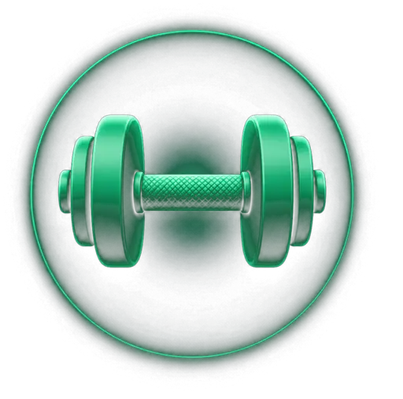

✨ Programa personalizado
Plan MoveSmart – Fernanda Ramírez
Este espacio reúne tu diagnóstico funcional, tus rutinas y las reglas de progresión para que puedas comenzar a entrenar desde un nivel inicial. El objetivo será desarrollar fuerza, aumentar gradualmente tu actividad y apoyar la reducción de grasa con sesiones simples, seguras y sostenibles.

No necesitas hacerlo perfecto: necesitas poder comenzar
Sesiones progresivas y adaptables para construir fuerza, confianza y constancia.
🎯 Objetivo: reducir grasa, mejorar la fuerza y aumentar tu capacidad física general.
📅 Frecuencia: 3 días por semana · sugerencia: lunes, miércoles y viernes.
⚡ Enfoque: fuerza de cuerpo completo · progresión gradual · creación del hábito.
Información del programa
Ver Rutina A ▶

Sesión completa de cuerpo completo para aprender los movimientos básicos y desarrollar fuerza con máquinas y pesas.
Fuerza completa ▶
Ver Rutina B ▶
Una alternativa más breve y simple para mantener el hábito durante los días de menor energía o cuando cueste comenzar.
Sesión rápida ▶
Mi Seguimiento MoveSmart
Revisa tu evolución, adherencia, energía, esfuerzo y registros después de entrenar.
Seguimiento ▶